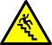

Aim
- To appreciate the importance of Inverse Diffusion Flame (IDF).
- To observe the variation in the flame height of turbulent LPG�air IDF with Momentum Ratio (MR).
- To obtain a correlation between Momentum Ratio (MR) and the flame height of turbulent LPG�air IDF.

Intro
What is an inverse jet diffusion flame?
A special kind of non-premixed flame established when high velocity central air jet surrounded by low velocity annular fuel jet is ignited.
Advantageous properties of IDF:
- Low soot volume fraction.
- Better mixing at higher air�fuel momentum ratio due to the port arrangement.
Comparison between NDF and IDF
Applications
- Produces less soot and can find application in gas turbine combustors and rockets etc. where radiation heat transfer needs to be minimized.
- The port arrangement in IDF configuration can aid in better air-fuel mixing as high momentum central air jet can entrain and mix the low momentum annular fuel jet effectively.
- IDF can be used as a benchmark flame for studying initial mechanism of soot formation as it forms incipient or young soot in the exhaust.

Procedure
Experimental Setup
Experimental Procedure
- The fuel is passed through the annular port of the coaxial burner and the air is fed through the central tube.
- The velocity of the air and fuel jets is measured using a pitot probe and micro-manometer.
- The digital camera has to be positioned at a distance where the flame of maximum height can be captured in order to have a constant magnification.
- The camera should be aligned perpendicular to the front plane of the burner. Once the camera position is fixed, it should not be disturbed or moved to new position in order to avoid variation in magnification from one case to another.
- The fuel is set to the desired flow rate using calibrated rotameter and ignited at the tube exit. The air jet velocity is changed using the needle valve to set the desired MR.
- The video is taken at a preset MR for certain time.
- The experiment is repeated for different MR.
- The time period of video for each case should be kept constant in order to extract equal number of frames from the videos.

Results
Image Processing
- The flame videos obtained are converted to frames using video to still image convertor software.
- The frames are analyzed using image processing software called ImageJ. The still images of the flame are processed by various techniques such as Enhance contrast and Edge detection for exact identification of flame tip from the nozzle rim.
- The number of pixels of the flame image in the vertical direction along the centerline from the burner rim to the point where the flame is visible is counted and is scaled with the known dimension, say, burner rim diameter to obtain the exact flame height.
Variation of flame height with MFR for LPG-air IDF
Flame height decreases with an increase in the Momentum Ratio (MR).
Visible Flame Appearance with MR for LPG-air IDF
- Momentum ratio (MR) is defined as the ratio of momentum between air jet and the momentum of fuel jet.
- The flame can be divided in two zones namely
- blue zone
- luminous zone (see figure)
- The blue emission is due to the radiation from excited CH* radicals in the premixed region at the flame base [1].
- The luminous zone is yellow due to the radiation from soot (carbon) particles.
Calculation of Visible Flame Height
Sample calculation for obtaining the visible flame height of turbulent LPG � air IDF for MR = 68.77 from single snapshot (see figure).
- The number of pixels in the vertical direction (along the centerline) from the burner rim to the point where the flame is visible (h) = 180 pixels
- Number of pixels of the burner diameter in the snapshot (x) = 7 pixels
- Actual dimension of the burner diameter (df) = 21 mm
- Scaling of the actual flame height (Hf) becomes
- Therefore, actual visible flame height can be obtained from the above expression as
Temporal Variation of Visible Flame
- Variation in visible flame height with time for MR = 66.77 is shown (see above figure).
- Undulations of the flame tip is observed from the time resolved images.
- The flame tip fluctuations occur due to buoyancy induced vortices shedding around it.
- As a result of local quenching, detached flame can be observed sometimes at the flame tip.
Error Analysis of Visible Flame Height
- Mean flame height (Hfm) is obtained from the average of the actual visible flame height of N flame images taken for analysis.
- The deviation from the mean flame height is obtained using the following formula
s: standard deviation of the flame height obtained from flame snapshots
Hfi: flame height of the ith image
i: index varying from 1 to N
Hfm: mean flame height
N: total number of flame images (26 in the present experiment)
Flame height is reported as
- Sample calculation for obtaining the visible flame height of turbulent LPG�air IDF for MR = 68.775 from 5 flame snapshots is shown.
- A total of 26 snapshots were processed for finding the visible flame height at a particular MR in the present study.
Simulation

Conclusions
- Basic characteristics of IDF are explained with its applications.
- The visible appearance of the flame can be divided broadly into two zones
(i) Blue zone
(ii) Luminous zone. - The blue zone height increases with MR together with a reduction in luminous zone height. This can be attributed to the better entrainment and mixing of annular jet by intense turbulence generated by the central air jet.
- A linear empirical relationship is obtained between the non-dimensional flame height and MR which will be useful in the preliminary design of compact IDF based combustion systems.

Precautions
- Ensure that the fuel line is leak proof.
- Experiments should be conducted in a ventilated room.
- Keep a fire extinguisher near the experimental setup.
- Ensure that the needle valves are functioning properly.
- The fuel flow rate has to be set to a minimum value initially using the needle valve and ignited at the burner exit.
- The fuel supply has to be stopped when the fuel jet is not getting ignited for a longer time. Then the burner has to be purged with air to avoid accumulation of unburnt fuel getting ignited in an uncontrolled way.

FAQs
- What is an inverse diffusion flame?
- Whether the flame observed in kitchen gas stove a premixed or inverse diffusion flame? Explain it.
- Why does the luminosity of IDF change from yellow to blue color with increase in air jet velocity?
- Explain the mechanism of buoyancy induced vortices shedding around the flame tip.
- Define flame quenching.
- What is linear regression analysis?
- What is the need for error analysis while handling experimental data?

References
- Gaydon, A. Spectroscopy of Flames.Springer, 1974.
- Mishra, D.P., Fundamentals of Combustion. Prentice Hall of India private Ltd, 2010.
- Sze, L.K., Cheung, C.S., Leung, C.W. Appearance, temperature and NOX emission of two inverse diffusion flames with different port design, Combust. Flame. 2006 ,V.144, pp. 237-248.
- Sobiesiak, A. and Wenzell, J.C. Characteristics and structure of inverse flame of natural gas, Proc. Combust. Inst, 2005, V.30, pp. 743-749.
- Mahesh, S. and Mishra, D.P. Stability and emission characteristics of turbulent LPG IDF in a backstep burner, Fuel, 2008, V.87, pp. 2614-2619.
- Mahesh, S. and Mishra, D.P. Flame structure of LPG � air Inverse Diffusion Flame in a backstep burner, Fuel, 2010, V. 89, pp. 2145�2148.